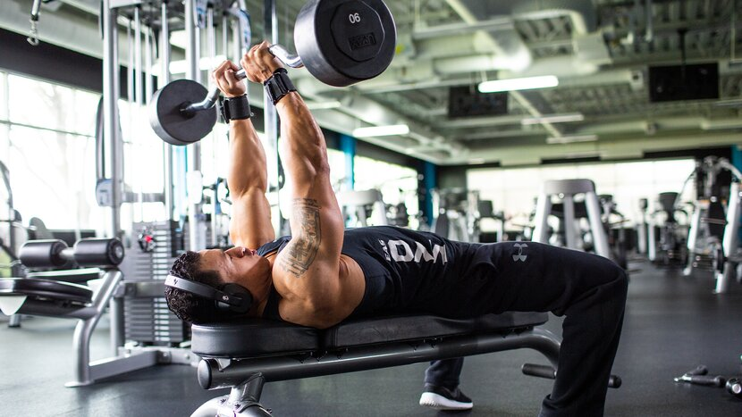
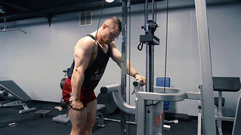

Best Exercise For Triceps
Triceps Builder #1 – Skullcrusher
This move—also known as a lying triceps extension—hammers two of the three heads of the triceps: the long and lateral heads. The most popular version is performed on a flat bench with the elbows locked over the head (hence the name), but it's also great on a decline or incline bench. It also works with a wide variety of resistance including not only an EZ-bar, but also dumbbells, cables, or even the Smith machine. The article, "Your Complete Guide to Skullcrushers" gives plenty of options to choose from.
Triceps Builder #2 – Cable Push-Down
For many lifters, this is the quintessential triceps burnout move, and for good reason. It effectively targets the lateral head, is easy to perform—just don't let your arms drift from your sides!—and lends itself easily to dropsets.
Triceps Builder #3 – Cable Overhead Extension With Rope

Like dumbbell overhead work, cable overhead presses focus on the often underdeveloped long head. The constant tension provided by the cable might actually make this a better choice than dumbbells if you're picking between the two.
Triceps Builder #4 – Triceps Dip

Dips are a proven mass-builder on their own. Their only problem: Lots of people can't do enough reps to get within the ideal muscle-building rep range of 8-12 reps. Either that, or they can do way too many. In the former case, use the assisted dip/pull-up machine or a band. In the latter, add weight with a dip belt or a light dumbbell between your knees or feet.